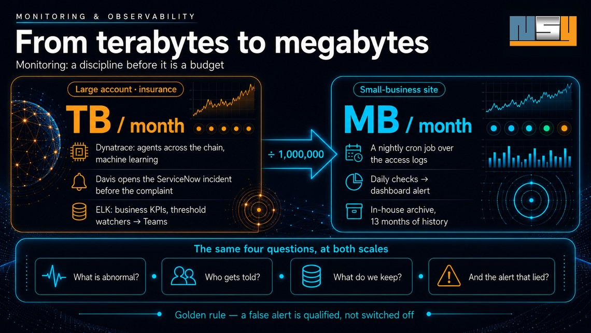

From terabytes to megabytes:
monitoring is a discipline before it is a budget
At a large insurance company, production pours out terabytes of logs every month, watched by two specialised tools and an AI that opens incidents on its own. On a small-business website, a script reads server logs that are counted in megabytes a month. From the terabyte to the megabyte there are six orders of magnitude: a factor of a million. And yet the very same questions get asked in both. I work in both. A story from each side of the mirror.

The four questions
Monitoring, observability, supervision: whatever the word, the job comes down to four questions.
What is abnormal — and how do we know before the user does? Who gets told, and through which channel? What do we keep, and for how long? And what do we do with an alert that lied?
None of these questions depends on the size of the system or on the budget. Only the answers change scale.
The large account: two tools, two ways of seeing
On assignment at a large insurance company — critical systems where response times are counted in milliseconds — monitoring rests on two complementary pillars. Two tools, and above all two ways of seeing that do not look at the same thing.
Dynatrace watches execution. Its agents instrument the whole production chain: the JVM and its memory, CPU, network throughput and retransmitted packets, distributed caches, object-storage errors. It is a remarkably powerful tool for anyone who actually works its metrics — the full stack, continuously, without asking anything of the applications themselves.
But its real strength lies elsewhere: Davis, its analysis engine, detects anomalies and creates incidents directly in ServiceNow. Nobody looked at a chart: the incident exists, qualified and tracked, before the first user has picked up the phone. That is exactly what proactive monitoring means — the alert comes before the complaint.
ELK reads what the applications say. Application logs carry what no infrastructure agent can guess: the business counters, the ones KPIs are built from. ELK also brings depth of history — precious for investigating lower-priority incidents, the ones analysed cold. And it alerts too: watchers keep an eye on service response times and on HTTP error codes that carry an exception, and push their alerts into a Teams channel, right where the team is.
Two ways of deciding that a number is abnormal. On the Dynatrace side, no threshold is typed in by hand: Davis relies on machine learning — it learns the usual behaviour of each component and flags the deviation, including where nobody had thought to set an alert. On the ELK side, watchers rely on explicit tolerance thresholds — so many 500 errors over the window, such a response time not to exceed — because learning-based anomaly detection there belongs to a higher licence tier. The two approaches complement each other more than they compete: learning sees what nobody planned to watch; the threshold guarantees that what was decided gets watched, and that the rule is readable by everyone.
A typical incident tells the story of that complementarity. One morning the volume of HTTP 500s shoots up: the ELK watcher fires, the alert lands in Teams. In parallel, Dynatrace reports errors on S3 storage. Two tools, two angles on the same event — one sees the symptom on the business side, the other points at the infrastructure at fault. It is the convergence of the two that makes the diagnosis; either alone would have told half the story.
All of it sits inside a ritual: every morning, while the information system ramps up, we look at error rates and response times. Not because an alert went off — because that is the hour when things reveal themselves.
The rule worth its weight in gold
With terabytes of logs a month, false alerts exist, inevitably. The natural temptation is to switch off whatever cries wolf.
Discipline says the opposite: a false alert is identified, analysed, then classified as such. It is not switched off. Every indicator must be analysed — the one disabled on a Tuesday because it was annoying is exactly the one that would have seen Thursday's incident. The silence of a sensor that has been turned off looks uncannily like a healthy production system.
The small business: the same reflexes, in a few megabytes
On the websites NSY designs and runs, there is no Dynatrace and no ELK cluster — and no reason there should be. There are server access logs, a collector that reads them every night, and a private dashboard. Megabytes of logs a month, where the large account counts in terabytes: a factor of a million between the two units.
And yet the four questions are the same — with the same answers, in miniature.
What is abnormal? Not just "how many visitors". The collector distinguishes, for instance, three kinds of reads made by artificial intelligences: the one triggered by a human's question — ChatGPT comes to read a page to answer someone, at that precise moment —, the one that feeds a search index, and plain training crawl. Over two weeks: more than two thousand robot reads, of which only 8% come from a real conversation. Without that distinction, the overall figure reassures and says nothing — the equivalent, at this scale, of a dashboard that mixed up business transactions with monitoring probes.
Who gets told? Daily checks — down to the reachability of favicons, whose silent disappearance replaces your logo with a grey globe in Google — surface their anomalies straight into the dashboard summary, where the eye passes every day. An alert that lives in a log file nobody opens is not an alert.
What do we keep? The shared host keeps only five weeks of raw logs. Every new question asked of the past — "what if we sliced it differently?" — ran into that wall. So the collector now archives every closed day, off the web and out of the code repository, with thirteen months of retention: enough to compare one summer with the next, for a few megabytes a year once compressed.
And the alert that lied? The lesson arrived this very week, in its artisan version. A measurement script was querying an answer engine; the engine, saturated, refused to reply — and the script filed those refusals as "negative result". A measurement that cannot tell "measured and negative" from "not measured at all" lies with the confidence of an exact figure. That is precisely the large account's rule: every indicator is analysed, none is presumed.
The correspondences, line by line
| Large account | Small-business site | |
|---|---|---|
| Collection | Dynatrace agents + ELK ingestion | a cron job over access logs |
| Volume | terabytes / month | megabytes / month |
| Proactive alerting | Davis opens the ServiceNow incident | daily checks → dashboard alert |
| Detection | machine learning (Davis) · tolerance thresholds (watchers) | comparison with the previous period, human reading |
| Threshold alerting | ELK watchers → Teams channel | (an acknowledged next step) |
| Business KPIs | counters extracted from application logs | AI reads by kind, Google provenance, customer reviews |
| History | ELK, cold analysis | in-house archive, 13 months |
| Golden rule | a false alert is qualified, not switched off | a refused measurement is not a zero |
What AI brings — and what it does not replace
The question always comes up, and it deserves an answer without manufactured enthusiasm. AI brings three things to monitoring, and leaves a fourth to humans.
Detecting without thresholds. This is already in production, and has been for a long time: Davis is machine learning. A threshold only sees what it was told to see; a model that has learned a component's usual behaviour sees the unexpected — the slow drift, the Sunday-morning anomaly, the service that only slows down under one precise combination of loads. Where the threshold requires the failure to have been foreseen, learning accepts that it was not.
Correlating. A real incident always speaks through several tools at once — 500s in the logs, storage errors in the metrics, a response time drifting. Bringing those signals together into a single story is the heart of diagnosis, and it is a matching job the machine does faster and more completely than a tired eye at three in the morning. The probable root cause, proposed before anyone went looking for it.
Telling the story. This is the most recent contribution, and the one NSY has implemented at its own scale. The websites' dashboard embeds an analysis agent that explains, in plain language, what the curves show: this visitor peak follows an article's publication by two days; that surge of reads by AI robots coincides with a dated search-visibility action. But its design imposes a strict rule: the model computes nothing and sees no raw data. It receives a dossier of already established facts — the peaks, the dated events, the comparisons — and is only allowed to write. It is even forbidden to say "because of": it says "coincides with", "follows by two days". Correlation, never causation. An agent that invents a plausible explanation for a false alert is worse than a silent dashboard: a wrong but convincing explanation creates a tunnel effect — a whole team rushes down the wrong path, and hours of analysis are lost at the precise moment they matter most. That is not a hypothesis: it has happened.
What it does not replace: judgement. Davis opens the incident, but a human qualifies it — or files it as a false alert. The agent tells the story, but a human decides whether the story holds. Every indicator must be analysed, said the golden rule; AI speeds up the analysis, it does not excuse anyone from doing it. And it is precisely because it speaks with such confidence that it is denied the right to assert.
One lead, to finish, at small-business scale: thirteen months of archived logs is exactly what it takes to learn a season. The natural next step is not to buy a tool; it is to let the agent propose its own thresholds from that history — and to keep a hand on what is done with them.
We do not monitor because we are big
We monitor because we are in production. It is the status that creates the duty, not the size: from the moment a system serves real users, someone has to know whether it is well — before they do.
The rest is a matter of scale, and scale, as we have seen, can be adjusted: two specialised tools and an AI that opens tickets on one side; a script of a few hundred lines and a sober dashboard on the other. Between the two, six orders of magnitude in volume — and not the slightest difference in principle.
NSY practises both scales: monitoring critical systems on consulting assignments, and the measured operation of the websites it designs. The dashboards described here ship with every delivered site.
A system in production and nobody to know it is well before your users do? Let’s talk — and see what a site delivered by NSY measures.